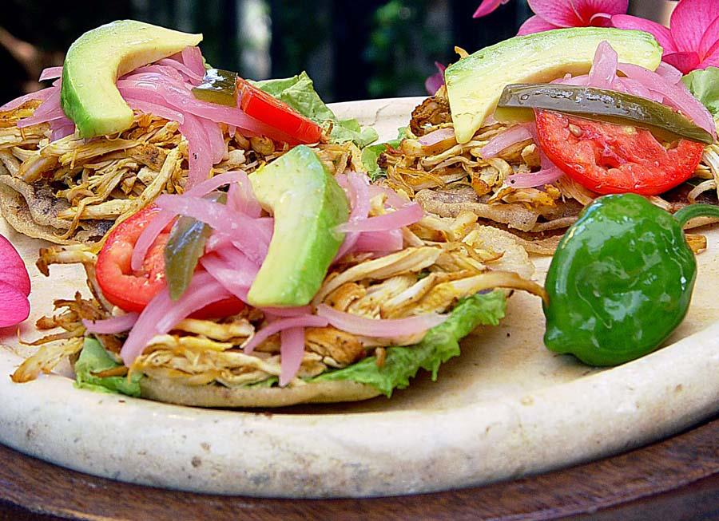
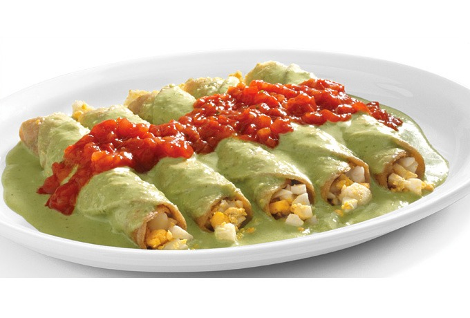
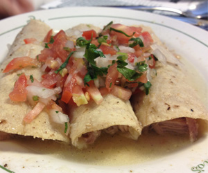
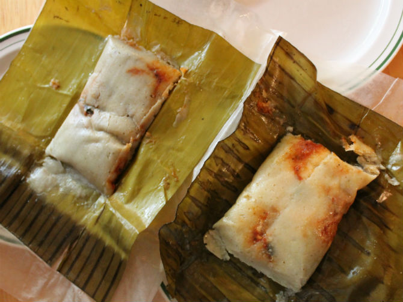

| texto julio  Es una pequeña tortilla de maíz hecha a mano, a las que se le hace un corte por el que se mete un guiso hecho a base de frijol y que luego es freída en aceite o manteca de cerdo. . |
PANUCHOS  Es un plato relativamente sencillo que consiste de tortillas de maíz remojadas en una salsa de pepitas (semillas) de calabaza, y rellenas de huevo cocido (a manera de tacos) y bañadas finalmente en una salsa de tomate con chile habanero y cebolla. |
PAPADZULES  La primera vez que escuché hablar de las tortas de lechón aquí en Mérida imaginé una torta tradicional, al estilo de las del resto del país (preparada con muchos ingredientes untados, desmenuzados, en un pan bolillo. |
LECHON  El tamal es un plato de origen indoamericano preparado generalmente a base de masa de maíz rellena de carnes, vegetales, chiles, frutas, salsas y otros ingredientes, envuelta en hojas vegetales como |